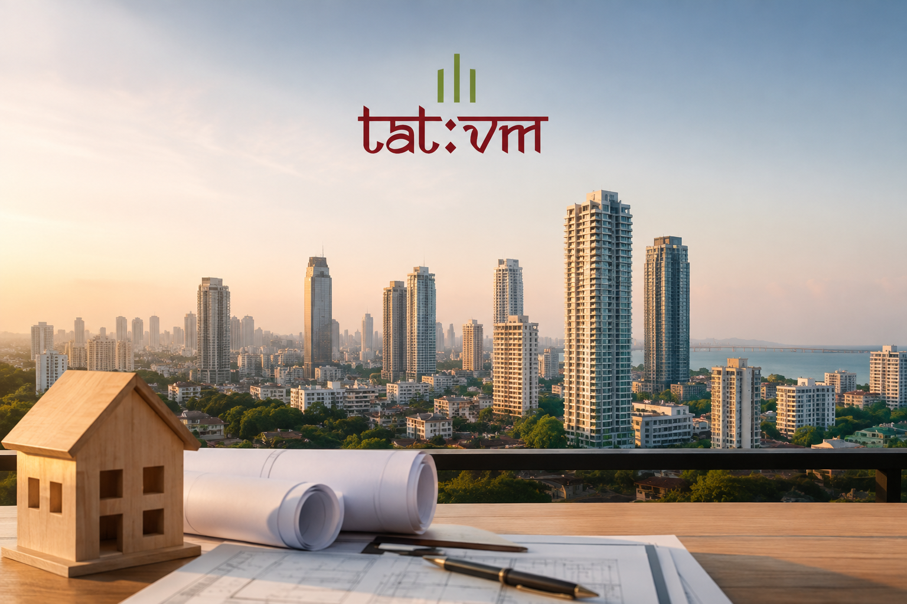

Top Real Estate Builders in Mumbai: How to Choose the Right Developer for Your Property Investment

Mumbai's property market is one of the most active in Asia, and choosing among the many real estate builders in Mumbai is the single most important decision you will make before signing a cheque. The right developer delivers on time, builds to specification, and protects your investment for decades. The wrong one drains your savings, delays possession by years, and leaves you fighting legal battles.
This guide walks you through who the leading builders in Mumbai are, what separates genuinely trustworthy developers from the rest, and a step-by-step framework you can use right now to verify any builder before committing a single rupee.
Who Are Real Estate Builders in Mumbai, and Why Does Your Choice Matter?
A real estate builder is the entity that physically constructs a residential or commercial project on a plot of land. They handle approvals, construction supervision, material sourcing, and project completion. A real estate developer, by contrast, acquires land, secures financing, and manages the overall project vision, often hiring contractors to execute the build. In practice, many large firms in Mumbai act as both, which is why the two terms get used interchangeably.
What separates Mumbai from other Indian metros is the sheer density of options and the corresponding complexity. The city spans South Mumbai's heritage corridors, the Western Suburbs stretching from Bandra to Borivali, the Central Suburbs running through Ghatkopar and Mulund, and the extended Mumbai Metropolitan Region covering Thane and Navi Mumbai. Each micro-market has its own price dynamics, connectivity drivers, and builder specialisations.
Getting this choice wrong is expensive in Mumbai. Entry prices in many localities mean that even a 5% loss of asset value because of a delayed or poorly executed project can translate to lakhs, if not crores, of rupees. Getting it right, on the other hand, means owning a property that appreciates steadily, has strong resale demand, and requires minimal post-handover maintenance.
When you explore projects across Mumbai's key geographies, you want to know that the developer behind them has both the vision and the execution history to deliver.
The Difference Between Real Estate Builders and Real Estate Developers
This distinction matters more than most buyers realise, because it changes what due diligence you need to do.
Real estate builders are primarily construction-focused. They are measured on:
- Build quality and material specifications
- Adherence to approved structural plans
- Speed and consistency of construction timelines
Real estate developers are primarily capital and vision-focused. They are measured on:
- Land acquisition strategy and legal title clarity
- Project conceptualisation and market positioning
- Financial structuring (how funds flow into and out of a project escrow)
- Delivery coordination across multiple vendors and contractors
A builder who is also a developer carries more risk because they control the full chain. But they also carry more accountability, which is actually a positive for buyers when RERA compliance is tight. Under the Real Estate (Regulation and Development) Act, 2016, every developer-builder operating in Maharashtra must register their project with MahaRERA before marketing or selling it.
The key takeaway: when you evaluate real estate builders in Mumbai, you are really evaluating the whole chain from land to livability.
Top Real Estate Builders in Mumbai: An Overview
No ranking is universal, but the names below appear consistently across market research, transaction data, and buyer satisfaction surveys. The intent here is not a definitive list but an orientation that helps you understand what quality looks like at scale, so you can apply the same lens to emerging developers.
Lodha Group (Macrotech Developers)
Lodha is the highest-volume residential developer in the Mumbai Metropolitan Region by units sold. Their projects range from affordable housing to ultra-luxury towers in Worli and Lower Parel. Known for large-scale township thinking, Lodha developments typically have strong infrastructure and amenity packages.
Oberoi Realty
Oberoi commands premium positioning, particularly in Goregaon and the Western Suburbs. Their Commerz and Esquire developments are benchmarks for mid-to-luxury finishes. Strong EBITDA margins historically reflect disciplined cost management and a low-debt balance sheet.
Godrej Properties
The Godrej brand carries significant consumer trust built over decades across sectors. Their real estate arm is known for sustainable practices and well-planned residential communities. Projects in Vikhroli, Powai, and the extended suburbs attract both end-users and investors.
Kalpataru Group
Kalpataru has a strong foothold in the Western Suburbs and Thane. Their reputation for on-time delivery and quality construction has built a loyal buyer base over several decades. The group also has commercial and mixed-use developments across key nodes.
Hiranandani Group
The Hiranandani name is synonymous with township development in Mumbai. Their Powai township practically redefined how a mixed-use community can be built in an Indian metro context. Thane is now seeing a similar approach with Hiranandani Estate.
Piramal Realty
Piramal entered real estate from a corporate background and brought institutional discipline to project execution. Their Mahalaxmi and Byculla projects target the upper-mid and luxury segment with a focus on branded living experiences.
Runwal Group
Runwal is a reliable mid-segment player with strong delivery credentials across projects in the Eastern Suburbs and Thane. A practical choice for buyers who prioritise value for money without compromising on connectivity.
Shapoorji Pallonji Real Estate
Backed by a 155-year-old construction conglomerate, Shapoorji's real estate arm brings engineering depth that few developers can match. Projects like Joyville target the affordable-to-mid segment with strong build quality.
What ties all these names together is a documented history of RERA registration, consistent delivery, and post-handover buyer support. These are the benchmarks against which any builder, including newer and emerging ones, should be evaluated.
What Makes a Real Estate Builder Truly Trustworthy?
1. MahaRERA Registration and Compliance History
Lodha is the highest-volume residential developer in the Mumbai Metropolitan Region by units sold. Their projects range from affordable housing to ultra-luxury towers in Worli and Lower Parel. Known for large-scale township thinking, Lodha developments typically have strong infrastructure and amenity packages.
2. Clear Land Title and Legal Approvals
Oberoi commands premium positioning, particularly in Goregaon and the Western Suburbs. Their Commerz and Esquire developments are benchmarks for mid-to-luxury finishes. Strong EBITDA margins historically reflect disciplined cost management and a low-debt balance sheet.
3. Financial Stability
The Godrej brand carries significant consumer trust built over decades across sectors. Their real estate arm is known for sustainable practices and well-planned residential communities. Projects in Vikhroli, Powai, and the extended suburbs attract both end-users and investors.
4. Design and Sustainability Philosophy
The vision and values that drive Tatvm Group are rooted in exactly this philosophy: space, light, air, vastu, and sustainability as the five pillars of every project. This is not a marketing language. It is a design brief that affects every decision from floor plate orientation to window sizing to landscaping.
5. Post-Handover Support
A builder who disappears after handing over keys is a red flag, regardless of how good the project looks at possession. Ask about the Defects Liability Period (typically one to five years for different components) and how the builder handles warranty claims.
How to Choose the Right Real Estate Builder in Mumbai: A Step-by-Step Process
This is the section most buyer guides skip because it requires actual work. Do not skip it.
Step 1: Verify RERA registration Go to maharera.maharashtra.gov.in, search for the builder's name under "Promoters," and check all their registered projects. Look at possession dates versus actual delivery dates on completed projects. A pattern of delays is a warning sign.
Step 2: Check for complaints and litigation On the same MahaRERA portal, search for complaints filed against the builder by project name or promoter name. A handful of resolved complaints is normal for a large developer. Multiple unresolved complaints involving money or possession are not.
Step 3: Visit completed projectsPhysical visits to the builder's completed projects tell you more than any brochure. Talk to residents. Ask about construction quality, common area maintenance, water pressure, electricity backup, and how quickly the developer responded to defect complaints.
Step 4: Review the legal documents Engage a property lawyer to review the sale agreement before you sign. Check the possession date clause, force majeure carve-outs, penalty provisions for delays, and what happens to your money if the project is cancelled or lapsed.
Step 5: Assess the design rationale Look beyond amenities lists. Ask the developer why the building is oriented the way it is. Ask about the floor-to-ceiling height, the window-to-wall ratio, cross-ventilation design, and energy ratings. The quality of these answers tells you whether the team has built with genuine intent or just ticked boxes.
Step 6: Evaluate the location with a long horizon A great builder in a poor location is still a poor investment. Research planned metro lines, upcoming commercial corridors, school and hospital proximity, and flood zone maps from the MCGM's Development Plan before committing.
Why Emerging Builders in Mumbai Deserve Serious Consideration
The assumption that only legacy names are safe is worth examining. Many established developers became dominant because they were early movers in a less regulated market. Today, MahaRERA has levelled the playing field in a meaningful way. Every registered builder, old or new, operates under the same disclosure obligations, escrow requirements, and completion timelines.
What an emerging developer can often offer is:
- A more focused and personally accountable leadership team
- Projects designed with contemporary buyer preferences from the ground up
- Better value per square foot in select micro-markets
- Greater flexibility in customisation and communication
The key is applying the same due diligence rigorously. Check their MahaRERA record, understand the founding team's background, visit any completed projects, and verify that their financial model is sound.
Tatvm Group's leadership page gives you a direct view into who is behind the company, their professional history, and the thinking that drives every project decision. That transparency is itself a trust signal.
Tatvm Group: Real Estate Builders in Mumbai Redefining Urban Living
Tatvm Group represents a new generation of real estate builders in Mumbai built on a specific philosophy rather than a history of volume. Founded by Rahul Maroo, a seasoned real estate professional, Tatvm is developing mid-to-premium residential and commercial projects across South Mumbai and the suburbs with a design brief rooted in the five tattvas: space, light, air, vastu, and sustainability.
What this means in practice is projects that are architecturally considered, not just constructed. Floor plates are designed to maximise natural light and cross-ventilation. Materials are selected with longevity in mind. Common areas are curated, not just provided. And every project is positioned to be the most iconic address in its market.
Tatvm also brings deep expertise in redevelopment and SRA (Slum Rehabilitation Authority) projects, a segment that requires significant regulatory knowledge and community-sensitive execution. If you own an ageing building or housing society in Mumbai and are considering redevelopment, connecting with the Tatvm team directly is a worthwhile first step.
To understand the full range of upcoming residential and commercial projects, visit the projects page for the latest pipeline across South Mumbai, Western Suburbs, and Central Suburbs.
Red Flags to Watch for When Evaluating Builders in Mumbai
Even with strong research, some warning signs can hide in plain sight.
- No RERA number in advertisements: Any project above the minimum threshold must display its MahaRERA registration number. Absence is illegal and is itself a disqualification.
- Vague possession timelines: "Expected in 2027" with no specific quarter and no penalty clause is a structural risk.
- Pressure to book before documents are shared: A reputable builder will give you all documents before asking for a booking amount.
- Unusually low price per square foot in a high-demand area: Distress pricing often signals financial trouble, a legal dispute over land, or construction shortcuts.
- No completed projects to visit: A builder with zero delivered projects asks you to take significant risk. The RERA escrow provides some protection, but there is no substitute for a delivery track record.
Conclusion
Choosing from the many real estate builders in Mumbai is not a task to rush or delegate entirely to a broker. Your due diligence framework should be consistent regardless of the builder's reputation: verify MahaRERA records, review legal documents through a property lawyer, visit completed projects, and assess the design quality with your own eyes.
Legacy names offer a delivery track record that reduces uncertainty. But Mumbai's regulatory environment under MahaRERA now gives buyers meaningful protection even when working with newer developers, provided those developers operate transparently and with genuine design intent.
Tatvm Group's brand story reflects exactly that kind of transparency. Every design decision, value commitment, and project promise is documented, accessible, and accountable. If you are exploring property investment in Mumbai and want a developer who treats each project as a landmark rather than a unit count, explore what Tatvm Group has in the pipeline or get in touch directly to discuss your requirements.
Frequently Asked Questions
1. Who is the No. 1 real estate builder in Mumbai?
Lodha Group (Macrotech Developers) is widely cited as the highest-volume residential developer in the Mumbai Metropolitan Region based on units sold and transaction value. However, "No. 1" depends heavily on the segment you are buying in. For luxury properties, Oberoi Realty and Godrej Properties are among the strongest names. For value-to-price ratio in the mid-segment, Runwal and Kalpataru have strong reputations. The right builder for you is the one whose project fits your budget, location preference, and delivery timeline, and who clears the RERA verification process cleanly.
2. Which are the top 5 real estate builders in Mumbai?
Based on a combination of transaction volume, delivery track record, buyer satisfaction, and RERA compliance, the five names that appear most consistently in market analysis are Lodha Group, Oberoi Realty, Godrej Properties, Kalpataru Group, and Hiranandani Group. Piramal Realty, Runwal Group, and Shapoorji Pallonji Real Estate are close behind and are particularly strong in their respective market segments. Emerging developers like Tatvm Group represent a new generation building on the same transparency principles with contemporary design philosophies.
3. What factors should you consider when choosing real estate builders?
The key factors are: MahaRERA registration and a clean compliance record, clarity of land title and all statutory approvals, the builder's delivery history on past projects (available publicly on the MahaRERA portal), financial stability and how the project escrow is managed, build quality and design philosophy, post-handover support commitments, and the location's long-term appreciation potential. Price per square foot should be your last filter, not your first.
4. How do I find the best real estate builders in Mumbai?
Start at the official MahaRERA portal and search for registered promoters. Cross-reference with completed projects you can physically visit. Read buyer forums and housing society communities for first-hand post-possession experiences. Engage a property lawyer to review sale agreements. Shortlist builders whose projects you have personally inspected and whose MahaRERA record is clean. A real estate broker can accelerate this process but should not replace your independent verification.
5. What is the difference between real estate builders and real estate developers?
A real estate builder is primarily responsible for construction: the physical act of building a structure per approved plans. A real estate developer manages the broader project from land acquisition and financing to design, marketing, and delivery, often hiring builders or contractors for execution. In the Mumbai market, most prominent firms function as developer-builders, handling both roles internally. The distinction matters for accountability: a firm that controls the full chain has more responsibility when something goes wrong and more control over quality.
6. Who are the top builders and real estate developers in Mumbai?
The most recognised names across both roles include Lodha Group, Godrej Properties, Oberoi Realty, Kalpataru Group, Hiranandani Group, Runwal Group, Piramal Realty, Shapoorji Pallonji, L&T Realty, and Mahindra Lifespaces. Each has a distinct strength: Lodha for volume and township scale, Oberoi for luxury finishes, Godrej for sustainability, Hiranandani for community infrastructure, and Shapoorji for construction engineering depth. Emerging developers like Tatvm Group bring focused design intent and institutional-grade transparency to the mid-to-premium segment.
7. What makes a real estate builder trustworthy?
Trustworthiness in a real estate builder comes down to five things: a clean and current MahaRERA registration with no unresolved complaints, a documented delivery track record on past projects, complete transparency on land title and approvals, a financially stable model with proper escrow management, and a leadership team that is visible and accountable. A builder who displays the MahaRERA registration number on all advertisements, shares documents proactively, and has residents who speak well of the post-handover experience is demonstrating all five.
`8. How can I verify a builder's reputation before investing?
The most reliable verification process involves four steps. First, search the builder's name on the MahaRERA portal and review all registered projects, completion dates, and any filed complaints. Second, physically visit at least one of their completed projects and speak directly with residents about build quality and the builder's responsiveness. Third, engage a property lawyer to review the sale agreement, title documents, and approvals before you pay any booking amount. Fourth, check the builder's leadership team and corporate history. A company with traceable founders, a published brand story, and a visible leadership page gives you more accountability than one with anonymous ownership.